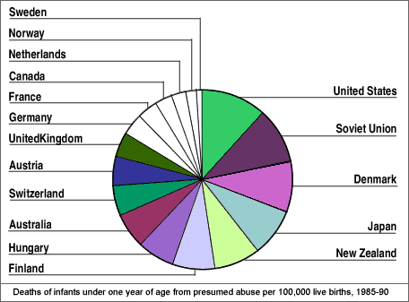

Bar charts for quantities
Bar charts are most often used to show frequencies for discrete or categorical data but they can be used to display any quantity data. (Quantity data are 'amounts' of something and are always positive. They are also called ratio variables.)
Pie charts for quantities
Pie charts can also be used to display quantity data, but there is an additional requirement that must be satisfied before a pie chart is used. The total of all the data that are displayed must itself be meaningful.
In the published pie chart below, the individual values are death rates per 100,000 live births, so their total is meaningless. A pie chart therefore should not have been used.
